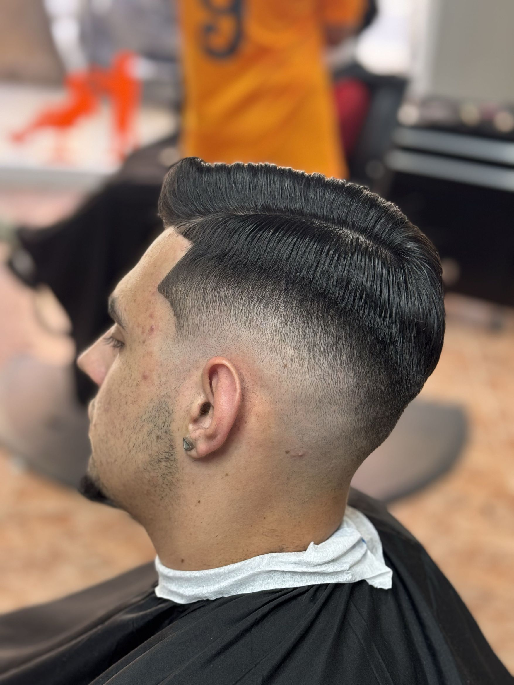
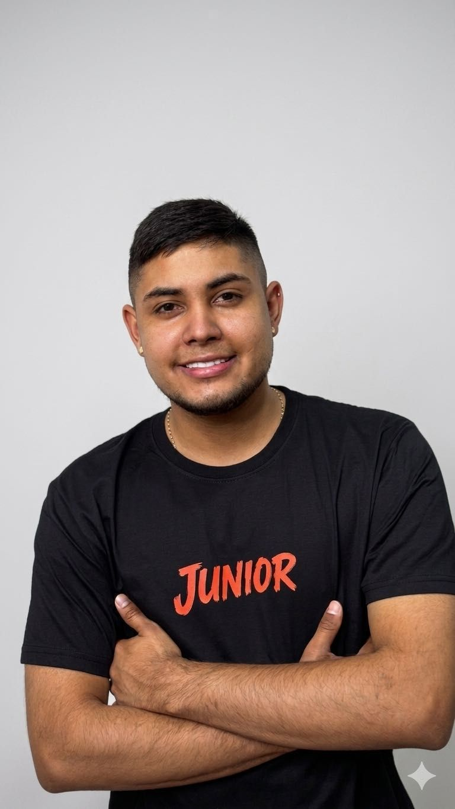
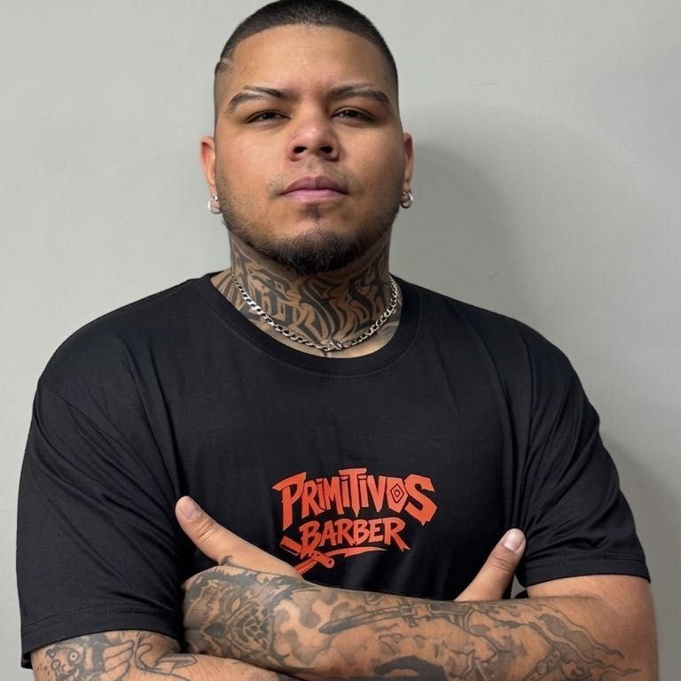
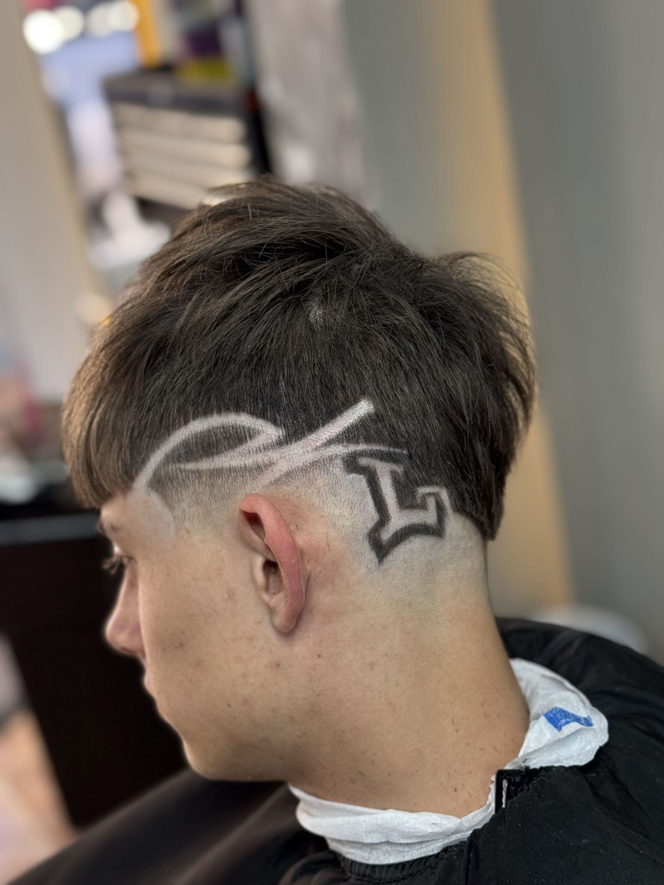
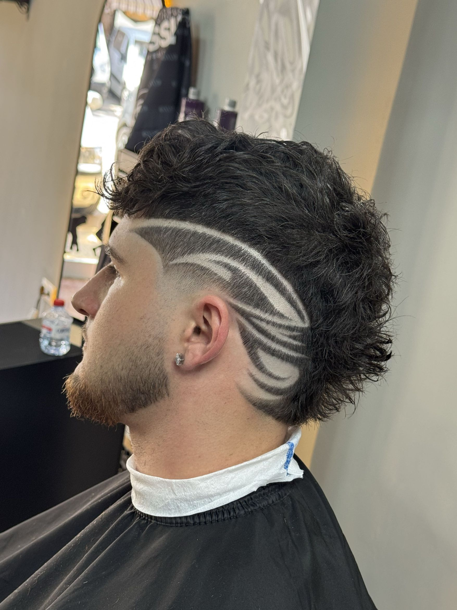
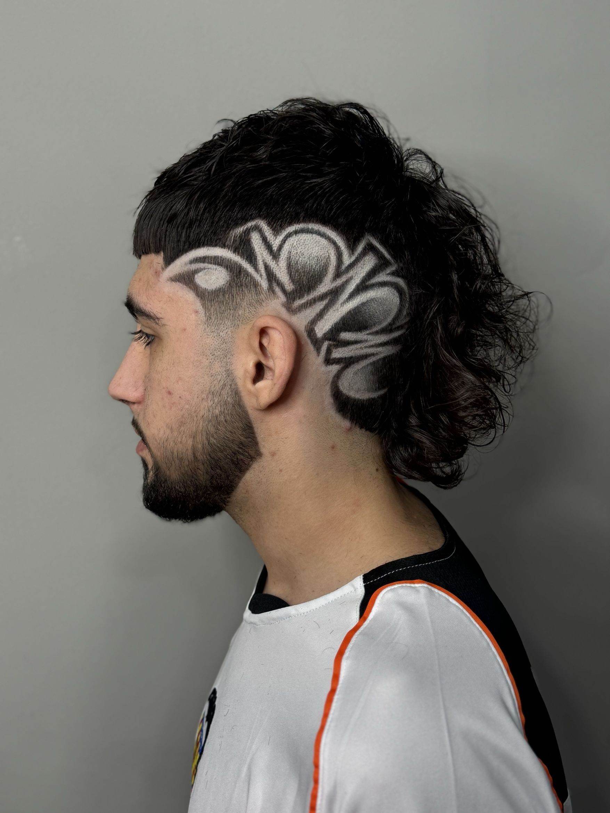
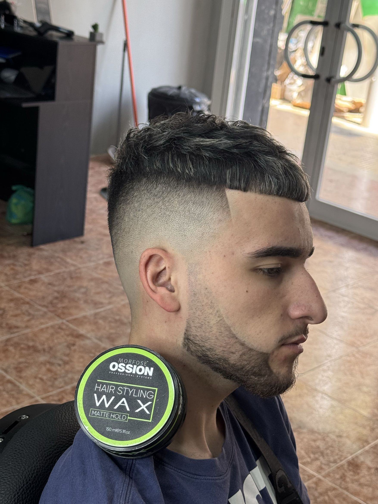

Fade, barba y cejas por Junior, Primitivos y Chef Barber. Elige a tu barbero y reserva online cuando quieras.


Corte y barba. El más reservado de la casa.

Fade y cortes creativos con firma propia.
Precisión en el detalle, de la patilla a la barba.




«Primitivo, Jr. y Chef son excepcionales. Un lugar agradable, limpio y ordenado para un corte con estilo. Muy recomendable.»
Eduardo S. · Google«Dani es increíble, el mejor cortando el pelo.»
Jey · BooksyAvinguda la Rambleta, 27. Cita previa recomendada, reserva online abierta siempre.
| Lunes a viernes | 10:00 –" 20:30 |
| Sábado | 10:00 –" 18:00 |
| Domingo | Cerrado |
Avinguda la Rambleta, 27
46470 Catarroja, Valencia
Sí. Reserva online en Booksy, elige servicio y barbero. La entrada sin cita depende de disponibilidad.
Sí, se aceptan tarjetas y pagos NFC con el móvil.
Sí, el local está preparado para niños y se permiten mascotas.
Sí. En la ficha de Booksy también hay cupones de sesiones para comprar varios servicios.